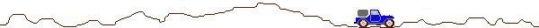

การใช้ Debug และคำสั่งต่างๆ

การใช้ Debug และคำสั่งต่างๆ
Debug เป็นโปรแกรม ซึ่งใช้ในการตรวจสอบหาข้อผิดพลาดของโปรแกรมแอสเซมบลีนอกจากนี้ยังสามารถใช้ Debug เขียนโปรแกรมภาษาแอสเซมบลีสั้นๆ ในส่วนนี้จะแสดงคำสั่งของ Debug และผลที่แสดงบนจอภาพ
เริ่มด้วยเมื่อผู้ใช้โหลด Dos เรียนร้อยแล้วจะเห็น pormpt A> บนจอภาพ ในการใช้ Debug ให้พิมพ์ debug ตามด้วย Enter ก็จะได้ prompt ของ debug คือ
A>debug พิมพ์บรรทัดนี้
- ( เครื่องหมาย prompt debug )
คำสั่ง D ( Dump )
- d 100 พิมพ์บรรทัดนี้
5BA5 : 0100 00 00 00 00 00 00 00 00-00 00 00 00 00 00 00 00 ............ 5BA5 : 0110 00 00 00 00 00 00 00 00-00 00 00 00 00 00 00 00 ............ 5BA5 : 0120 00 00 00 00 00 00 00 00-00 00 00 00 00 00 00 00 ............
ดังที่ปรากฏข้างบน คือค่าที่อยู่ในคอมพิวเตอร์ ค่าที่แสดงเป็นเลขฐานสิบหก โดยที่เลขฐานสิบหก 2 ตัวคือ 1 ไบต์ ค่าของเลขฐานสิบหก 2 ตัว มีค่าอยู่ระหว่าง 00h ถึง FFh หรือค่า 0 ถึง 255 ของเลขฐานสิบนั่นเอง ดังภาพจะบอก address คือตำแหน่งที่อยู่ในหน่วยความจำและ content คือตำแหน่งนั้นๆ ตำแหน่งที่อยู่ในหน่วยความจำ คือค่าในคอลัมน์แรกเช่น 5BA5:0100 จะเห็นว่าตำแหน่งที่อยู่ประกอบด้วยสองส่วนคั่นด้วยเครื่องหมาย : ค่าทางซ้ายมือคือ 5BA5 ซึ่งในเครื่องที่คุณใช้อาจได้เป็นค่าอื่น หมายถึง ค่าของเซ็กเมนต์ และค่าทางขวามือ คือ ออฟเซต
ค่าที่อยู่ในหน่วยความจำ อยู่ในส่วนถัดมา โดยที่แต่ละบรรทัดจะมี16ค่า หรือ 16 ไบต์เรียงลำดับดังนี้
0 1 2 3 4 5 6 7 8 9 A B C D E F
5BA5 : 0100 00 00 00 00 00 00 00 00-00 00 00 00 00 00 00 00 ............ 5BA5 : 0110 00 00 00 00 00 00 00 00-00 00 00 00 00 00 00 00 ............ 5BA5 : 0120 00 00 00 00 00 00 00 00-00 00 00 00 00 00 00 00 ............
ซึ่งก็คือค่าที่เรียงอยู่ในหน่วนความจำดังรูป
คำสั่ง A ( Assemble )
เป็นคำสั่งที่ใช้พิมพ์โปรแกรมภาษาแอสเซมบลี โดยที่โปรแกรมที่เขียนโดยใช้ Debug จะต้องเริ่มที่ออฟเซต 100h เมื่อพิมพ์
- a 100
5BA5 : 0100 -
พิมพ์ mov dl,61 จะได้
5BA5 : 0100 mov dl,61
5BA5 : 0102 -
พิมพ์ส่วนที่เหลือของโปรแกรม เมื่อเสร็จบนภาพจะได้
- a 100
5BA5 : 0100 mov dl,61
5BA5 : 0102 mov ah,2
5BA5 : 0104 int 21
5BA5 : 0106 int 20
5BA5 : 0108
คำสั่ง G (Go )
ถ้าต้องการทราบว่าโปรแกรมที่เพิ่งพิมพ์เข้าไปให้ผลอย่างไรพิมพ์คำสั่ง g
- g
คำสั่ง U ( Unassemble )
เป็นคำสั่งที่ทำงานตรงกันข้างกับคำสั่ง "A" คือจะแปลโปรแกรมภาษาเครื่อง ให้เป็นโปรแกรมภาษาแอสเซมบลี
คำสั่ง R ( Registers )
เป็นคำสั่งที่แสดงค่าที่อยู่ในรีจิสเตอร์ของ 8088
- r
AX = 0000 BX = 0000 CX = 0000 SP = FFEE BP = 0000 SI = 0000 DI = 0000
DS = 5BA5 ES = 5BA5 SS = 5BA5 IP = 0100 NV UP EI PL NZ NA PO NC
5BA5:0100 mov DL,61
จะเห็นว่ารีจิสเตอร์ AX มีค่า 0000 รีจิสเตอร์ BX มีค่า 0000 รีจิสเตอร์ IP มีค่า 0100 ถ้าต้องการเปลี่ยนค่าในรีจิสเตอร์ก็ทำได้โดยใช้คำสั่ง r ตามด้วยชื่อรีจิสเตอร์
คำสั่ง N ( Name )
เป็นคำสั่งที่เป็บโปรแกรมบนแผ่นดิสค์เก็ต โดยผู้ใช้ต้องบอกชื่อของโปรแกรม โปรแกรมมีกี่ไบต์และบอกคอมพิวเตอร์ให้เขียนโปรแกรมลงบนดิสค์
คำสั่ง Q ( Quit )
เป็นคำสั่งที่ออกจาก Debug สู่ Dos
คำสั่งต่างๆ Debug
A = ASSEMBLER เช่น A103 ไปแก้ได้และเป็นการเริ่มโปรแกรมก็ได้ C = COMPARE เปรียบเทียบบล็อกข้อมูล 2 บล็อก ไบต์ต่อไบต์ D = DUMP ดู Memory E = ENTER แก้ไขโปรแกรมที่เขียนเป็นฐาน 16 F = FILE แก้ไขเพิ่มเติม G = GO เช่น G200 Run โปรแกรมตั่งแต่ 200 H = HEXADECIMAL การบวกลบในฐานสิบหก I = INPUT อ่านค่าจากอินพุต L = LOAD Load ไฟล์ M = MOVE Move ค่าจากที่หนึ่งไปอีกที่หนึ่ง N = NAME ตั้งชื่อไฟล์ O = OUTPUT ส่งค่าที่ได้ไปยัง Port Q = QUIT ออกจาก Debug R = REGISGER ดูค่าใน Register ทั้งหมด S = SEARCH ค้นหาค่าที่ต้องการ T = TRACE Run ทีละคำสั่ง U = UNASSEMBLER ดูเฉยๆ W = WRITE บันทึก
